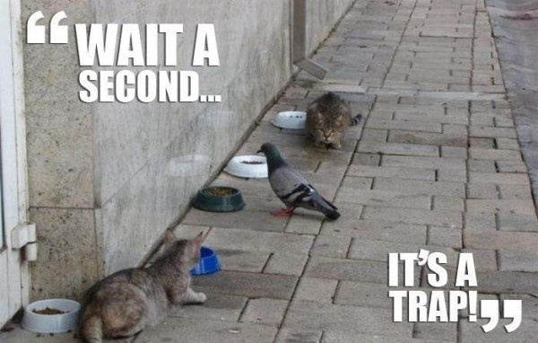

JavaScript in a simple way
Created by Scott Barr and Marcin MaruszakFacts
CoffeeScript is a programming language that transcompiles to JavaScript
not the only one
Created by Jeremy Ashkenas in December 2009


The Golden Rule
It's just JavaScript
Correction - THE GOOD PARTS OF JAVASCRIPT
Doug Crockford on Coffeescript:
“I think CoffeeScript is clearly good stuff. CoffeeScript is elegant it sort of takes the good parts, removes all of the stupid awful syntax that were inherited from the wrong languages, replaces it with something that is small and elegant and expressive. CoffeeScript is really great. And CoffeeScript is having a big influence on the ECMA Script committee….. CoffeeScript is definitely in the right direction and I would like to see future languages looking more like CoffeeScript than like C.”
Adds syntactic sugar inspired by Ruby, Python and Haskell
Passes through JavaScript Lint without warnings
Strict Mode early syntax errors at compile time
Will work in every JavaScript runtime
CoffeeScript in real projects


Language Reference
Quick Intro
- Significant Whitespace instead of curly braces
- No semi-colons - Just ending the line will do!
- The final statement in a code block is the return value (unless return specified above)
- this becomes @
- No global namespace pollution!
Strings
Coffeescript provides ruby-like syntax for string interpolation.
We've probably all down something like this in javascript:
var name = "Skyscanner";
var crowd = "employees";
var hello = "Hello " + name + " " + crowd;
# or
var hello = ["Hello", name, crowd].join(' ');
With coffeescript we can do:
name = "Skyscanner"
crowd = "employees"
hello = "Hello #{name} #{crowd}"
Multiline strings are allowed in CoffeeScript:
mobyDick = "Call me Ishmael. Some years ago --
never mind how long precisely -- having little
or no money in my purse, and nothing particular
to interest me on shore, I thought I would sail
about a little and see the watery part of the
world..."
Block strings for indentation-sensitive text:
mobyDick = """
Call me Ishmael. Some years ago --
never mind how long precisely -- having little
or no money in my purse, and nothing particular
to interest me on shore, I thought I would sail
about a little and see the watery part of the
world...
"""
Functions
Functions are defined by an optional list of parameters in parentheses, an arrow, and the function body
# CoffeeScript
square = (x) -> x * x
// JavaScript
var square = function(x) {
return x * x;
}
We can even pass in default argument values!
square = (x = 5) -> x * x
square() # 25
square(3) # 9
CoffeeScript also provides a nice and useful keyword for self invoking functions:
# CoffeeScript
do -> console.log 'Hi Skyscanner'
// JavaScript
(function() {
return console.log('Hi Skyscanner');
})();
Function binding
How many times do you have to do this?!
var name = 'Scott';
var user = function() {
var _this = this;
$('#container').on('click', function() {
console.log(_this.name);
});
};
The fat arrow is what you want!
name = 'Scott'
user = ->
$('#container').on 'click', => console.log @name
Conditionals
Very simple and understandable!
if weekend
mood = "happy!"
pub = true
else
mood = "crabbit!"
pub = false
Ternary
mood = if weekend then "happy!" else "crabbit!"
Unless statement
mood = "crabbit!" unless weekend
# equal to
mood = "crabbit!" if not weekend
JavaScript can have some odd behaviour when using == and !=
"2.0" == 2
# true!?
"2.0000000000000001" == 2
# true again!
This is because it performs no type conversion when using this operator.
Use is and isnt
Thankfully JavaScript does provide us with === and !==
Coffeescript provides us with the is and isnt keywords
val = if square(3) is 9 then true else false
# equal to
val = square(3) is 9
volume = if music isnt "Justin Bieber" then 11 else 0
Existance Operator
I'm sure many of us have mucked around with JavaScript's indexOf() method.
Coffeescript provides us with a neat little trick to check existance.
bands = ['rolling stones', 'lynyrd skynyrd', 'led zep']
alert('turn it up!') if 'led zep' in bands
Loops and Comprehensions
CoffeeScript provides us with two different kinds of for loops:
iterating over an array
console.log(food) for food in ['broccoli', 'spinach', 'chocolate']
iterating over the properties of an object
console.log(key, value) for key, value of document
Everything is an expression in CoffeeScript, and this also applies to loops:
countdown = (x for x in [10..1])
#countdown = [10, 9, 8, 7, 6, 5, 4, 3, 2, 1]
Does it look familiar?
yearsOld =
max: 10
ida: 9
tim: 11
ages = for child, age of yearsOld
"#{child} is #{age}"
# ages = ["max is 10", "ida is 9", "tim is 11"]
There is more!
# when
shortNames = (name for name in list when name.length < 5)
# by
numbers = (number in [0..100] by 10)
# own
foo = (value for own key, value of object)
The Existential Operator
The Existential Operator checks for the existence of a variable
myValue1 = 'Hello World'
if myValue1? then console.log myValue1
if myValue2? then console.log myValue2
# myValue2 doesn't exist
kids =
brother:
name: "Max"
age: 11
if kids.sister?.name then say('hi') else showError()
Destructuring Assignment
Similar idea to unpacking in Python
weatherReport = (place) -> [place, 4, "Always miserable!"]
[city, temp, forecast] = weatherReport("Edinburgh")
# city = "Edinburgh"
# temp = 4
# forecast = "Always miserable!"
Classes, Inheritance
In Javascript you need to repetitvely add your methods to the prototype.
It's pretty awkward to emulate super() method in JavaScript.
Coffeescript provides a basic class structure.
class Animal
constructor: (@petName, @animal) ->
speak: (say) ->
alert("#{@petName} the #{@animal} says: #{say}")
class Dog extends Animal
constructor: (petName) ->
super(petName, 'dog')
speak: -> super('woof')
class Cat extends Animal
constructor: (petName) ->
super(petName, 'cat')
speak: -> super('meow')
willow = new Cat('Willow')
willow.speak()
fido = new Dog('Fido')
fido.speak()
Debugging
Traps!
Significant whitespace
(a, b) -> a + b
(a, b) -> a +b
Optional curly brackets
action({key: value}, {option: value})
// action({key: value}, {option: value});
action(key: value, option: value)
// action({key: value, option: value});
Because you can
(n) -> (p.push i for i in [2..n] when not (j for j in (p or p=[]) when i%j == 0)[0]) and n in p